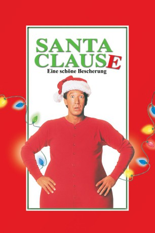

#4776 Santa Clause - Eine schöne Bescherung
Alternativ: The Santa Clause
 
 IMDB-Wertung: 6.4 / 10
IMDB-Wertung: 6.4 / 10  Metascore: 0
Metascore: 0 
Familienvater Scott Calvin gerät am Heiligabend in eine unerwartete Zwangslage: der Weihnachtsmann ist soeben von Scotts Dach gefallen und liegt bewußtlos im Schnee: Ausgerechnet er soll ihn nun vertreten. Doch mit dem Anziehen des Kostüms verwandelt sich Scott allmählich selbst zum echten Weihnachtsmann. Er wird zusehends dicker, und sein Bartwuchs ist nicht zu stoppen. Bald begreift er, welche Konsequenzen auf ihn zukommen... Sein Sohn findet das super, doch die Erwachsenen reagieren verständnislos.
Jahr: 1994
Dauer: 93 Minuten
FSK: 0
Land: USA Studio: Buena Vista PicturesTonspuren: DD5.1 - ,
Untertitel:
Auflösung: 1080p (1920x1040) Größe: 8089 MB
Genre: Drama, Komödie, Fantasy, Familie, Weihnachten
Regisseur: John Pasquin
Drehbuch: Marc Haimes
Soundtrack:
Darsteller:
 Tim Allen als Scott Calvin / Santa Claus
Tim Allen als Scott Calvin / Santa Claus Judge Reinhold als Dr. Neil Miller
Judge Reinhold als Dr. Neil Miller Wendy Crewson als Laura Calvin Miller
Wendy Crewson als Laura Calvin Miller Eric Lloyd als Charlie Calvin
Eric Lloyd als Charlie Calvin David Krumholtz als Bernard the Elf
David Krumholtz als Bernard the Elf Larry Brandenburg als Det. Nunzio
Larry Brandenburg als Det. Nunzio Mary Gross als Miss Daniels
Mary Gross als Miss Daniels Peter Boyle als Mr. Whittle
Peter Boyle als Mr. Whittle- Judith Scott als Susan Perry
 Jayne Eastwood als Judy the Waitress
Jayne Eastwood als Judy the Waitress- David Avalon als Waiter
 Steve Vinovich als Dr. Pete Novos
Steve Vinovich als Dr. Pete Novos- Tabitha Lupien als Future Ballet Girl
- Lachlan Murdoch als Kid at Soccer Field
 David Sparrow als Bobby's Dad
David Sparrow als Bobby's Dad Gordon Masten als Desk Sergeant
Gordon Masten als Desk Sergeant- John Pasquin als Santa #6
 Frank Welker als Reindeers
Frank Welker als Reindeers- Paige Tamada als Judy the Elf
- Melissa King als Sarah the Little Girl
- Bradley Wentworth als Elf at North Pole
- Azura Bates als Elf in Hangar
- Joshua Satok als Larry the Elf
- Zachary McLemore als Bobby, Kid #1
- Joyce Guy als Principal Compton
- Lindsay Lupien als Classroom Kid #2
- Alexandra Petrocci als Classroom Kid #3
- Jesse Collins als Ad Executive
- Aimee McIntyre als Ruth
- Dennis O'Connor als Mailman
- Ron Hartmann als Judge G. Whelan
- Nic Knight als Quintin, R&D Elf
- Scott Wickware als Officer Malone
 Gene Mack als Officer Newman
Gene Mack als Officer Newman- Brett Moon als Elf #1
- Ryan Moon als Elf #2
- Jack Newman als Santa in Street
 Michael Caruana als Arresting Officer
Michael Caruana als Arresting Officer- Micha Jackson als Street Child #2
- Cody Jones als Street Child #1
- Kenny Vadas als E.L.F.S. Leader
- Brian Reilly als Tinsel Man
 Philip Williams als Sharpshooter
Philip Williams als Sharpshooter- Chris Benson als Fireman O'Hara
- Laura Catalano als Veronica
- Peter Kosaka als Japanese Businessman
- Ivanka Kotalto als E.L.F.S. #2
- Todd Davis als E.L.F.S. #3
- Marc Pichette als E.L.F.S. #4
- Tony Krolo als Coffee Cop
Datei: X:\3-Trilogie(N-Z)\Santa Clause\Santa Clause - Eine schöne Bescherung (1994, FSK0, 1920x1040).mkv seit 15.11.2016
Festplatte: HD Collection-3(N-Z)-6(A-Z)
 Alle Filme aus Gruppe '3-Trilogie(N-Z)\Santa Clause'
Alle Filme aus Gruppe '3-Trilogie(N-Z)\Santa Clause'